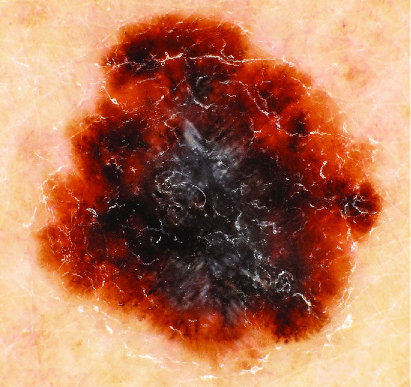

CH LAB-Order (R4)
3.0.0 - trial-use

CH LAB-Order (R4)
3.0.0 - trial-use

This page is part of the CH LAB-Order (R4) (v3.0.0: STU 3) based on FHIR (HL7® FHIR® Standard) R4. This is the current published version. For a full list of available versions, see the Directory of published versions
Frau Birgit Blum ist beim Skifahren unglücklich gestürzt und hat sich eine multifragmentäre Tibiaplateaufraktur zugezogen. Sie wurde mit dem Helikopter in das Kantonsspital, ein Zentrumsspital, geflogen und wartet dort auf ihre Operation. Die Patientin erhält täglich Liquemin 5000 E s.c., um thromboembolischen Ereignissen vorzubeugen. Um die Wirkung dieser Behandlung zu überwachen, werden regelmässig Blutuntersuchungen zur Bestimmung der Anti-Xa-Aktivität durchgeführt. Zu diesem Zweck wird ein spezielles Probengefäss mit Citrat-Zusatz verwendet. Die Probe muss innerhalb einer Stunde zentrifugiert und gekühlt werden. Ein wichtiger Eintrag auf ihrer Problemliste ist die Herzerkrankung.
Der Patient Tobias Timmermann stellt sich bei Dr. med. Marc Mustermann in der Gemeinschaftspraxis Olten vor. Er identifiziert sich mündlich über seine Stammdaten als Tobias Timmermann, geboren am 01.01.1984. Er berichtet von unklaren Beinschmerzen im linken Unterschenkel sowie von gleichzeitig auftretenden Atemwegsschmerzen und Husten. Der Arzt führt die Anamnese und körperliche Untersuchung durch und ordnet folgende Laborparameter an:
Der Arzt führt das Blutbild und die CRP-Bestimmung mittels Point-of-Care-Diagnostik selbst durch, die D-Dimer-Diagnostik wird als quantitative Diagnostik in einem externen Einsendelabor verordnet. Zur Gewinnung der Probe wird eine Blutprobe im Liegen entnommen (1 EDTA-Röhrchen, 2 Citrat-Röhrchen à 5 ml). Der Auftrag wird an das externe Labor übermittelt und die Probe wird per telefonisch bestelltem Kurier an das externe Versandlabor gesandt. Die Ergebnisse der internen Point-of-Care-Diagnostik (Blutbild und CRP) werden in das Laborblatt des Patienten in der Praxissoftware des Arztes eingetragen (manuell oder über lokal installierte elektronische Schnittstellen). Der Arzt stellt dem Patienten daraufhin ein Rezept zur Selbstverabreichung eines Antithrombotikums aus. Die Ergebnisse des einsendenden Labors treffen noch am selben Abend elektronisch beim Hausarzt ein und werden ebenfalls in den Laborbogen des Patienten eingetragen. Durch die Verwendung des vorliegenden Austauschformats kann dieser Prozess vollständig automatisiert werden. Nach einer telefonischen Rückfrage des Arztes im Einsendelabor wegen eines grenzwertigen D-Dimer-Ergebnisses erfolgt die Information, dass in dieser Situation eine tiefe Venenthrombose mittels D-Dimer nicht ausgeschlossen werden kann und der Patient deshalb am nächsten Tag zur Sonographie der Beine zurückgerufen wird.
Da es sich wahrscheinlich um eine primäre Beinvenenthrombose handelt, sendet Dr. Eva Erlenmeier vom Pipette-Labor eine Rückmeldung an Dr. Mustermann mit der Empfehlung, ein Thrombophilie-Screening durchzuführen, das folgende Analysen umfasst: Quick, aPTT, Fibrinogen, Antithrombin (funkt.), Thrombinzeit I 2,5 NIH/ml, APC-Resistenz, D-Dimere, Protein C, (aPTT-Methode), Protein S-Antigen. Die Analysen können direkt aus den mitgeschickten Proben der Citratröhrchen durchgeführt werden.
Der Assistenzarzt der gynäkologischen Abteilung in der Oltner Gemeinschaftspraxis, Dr. Peter Pap, bereitet die Sprechstunden des nächsten Tages vor. Da die Praxis nur über ein minimales eigenes Labor verfügt, werden einige Patientinnen vor dem Termin in die nahe gelegene Pipette-Laborambulanz geschickt, so auch die junge Patientin Frau Marina Rubella, geboren am 8. 8. 1992. In ihrer Praxissoftware verordnet die MPA die mit dem Labor vereinbarten Standardanalysen für die gynäkologische 3-Jahres-Untersuchung der Patientin Rubella. Dazu gehört auch die Blutserum Entnahme für eventuelle Folgeverordnungen. Das Labor übermittelt die Ergebnisse spätestens 90 Minuten nach der Blutabnahme an die Praxis. Dr. Pap verordnet während der Konsultation die folgenden Untersuchungen:
Ergänzungsauftrag "Screening vor Schwangerschaft": Alle Tests können aus dem vorab in der Ambulanz entnommenen Material (Serum, EDTA-Blut) durchgeführt werden (Hepatitis-Bc-Antikörper, HIV 1+2 (Ak+p24), Röteln-IgG, Lues/Syphilis-Screening-Test)
Eine 45-jährige Patientin, Simone Studer, kam zur regelmäßigen Hautkontrolle in die Praxis von Dermatologe Armin Ahrens und entdeckte diese Läsion: Noduläre Nävi, bestehend aus einem seborrhoischen Bereich am oberen Ende und einem atypischen Netzwerk aus vielen einzelnen Punkten, Strukturen usw., die auf eine melanozytäre Beteiligung hindeuten. Exzision. Einschluss dermatoskopischer Bilder Präparat: 29 x 11 x 5 mm Hautellipse Körperstelle:

Abb.: Dermatoskopisches Bild
Eine Mutter sucht mit ihrem 6-jährigen Sohn Emil Kummer, geboren am 5. Mai 2014, den Hausarzt Peter Presto der Oltner Gemeinschaftspraxis auf, weil das Kind seit vierzehn Tagen vermehrt hustet, krampfartige Hustenanfälle hat und Fieber hat. Die Arzthelferin misst das Fieber, entnimmt dem Sohn eine Blutprobe aus der Fingerkuppe, bestimmt den CRP-Wert und fertigt einen Blutausstrich an. Der Arzt vermutet eine virale Infektion, will aber Keuchhusten ausschliessen, obwohl das Kind dagegen geimpft ist. Da er wegen eines Notfalls unter Zeitdruck steht, will er den erforderlichen Rachenabstrich nicht selbst durchführen, sondern bittet die Mutter, das Kind in das nahe gelegene Labor zu begleiten, um den Abstrich in Ruhe durchführen zu lassen. Er bereitet einen Laborauftrag zur Durchführung einer Pertussis-PCR am Rachenabstrich des Kindes vor und gibt der Mutter den Auftrag. Die Mutter selbst ist sich nicht sicher, ob sie selbst gegen Keuchhusten geimpft ist.
Der Hausarzt Peter Presto gibt ihr deshalb sofort die Keuchhustenimpfung und empfiehlt, dasselbe auch für den Vater und die Großeltern des Kindes zu tun. In der Zwischenzeit hat sich die MPA den Blutausstrich des Sohnes unter dem Mikroskop angesehen und findet eine Menge reaktiver Lymphozyten, die ihr verdächtig erscheinen. Sie ist unsicher und fragt den Arzt, der anordnet, die Blutausstriche des Kindes der Mutter zu geben und sie im Labor genauer untersuchen zu lassen. Die Mutter kommt mit ihrem Sohn im Labor an, wo der Arzt zunächst die Identität des Kindes feststellt. Dann werden dem Kind im Blutentnahmeraum des Labors ein Rachenabstrich und eine rechte cubitale Venenpunktion entnommen und zusammen mit den Blutabstrichen und dem Untersuchungsauftrag des Arztes an das Labor weitergeleitet.
Betriebe, die mit gesundheitsgefährdenden Stoffen arbeiten und in denen die Beschäftigten besonderen Risiken ausgesetzt sind, unterliegen der arbeitsmedizinischen Vorsorge durch die SUVA. Die biologische Überwachung ist eine der Kontrollmöglichkeiten. Dabei wird die Exposition der Arbeitnehmer gegenüber chemischen Arbeitsstoffen durch die Bestimmung der Arbeitsstoffe oder ihrer Metaboliten in biologischem Material (z.B. Urin) beurteilt. Die Arbeitsmedizinische Vorsorge (AMV) der SUVA schickt dem Labor monatlich eine Liste mit folgenden Angaben pro Betrieb (Sammelauftrag):
durchzuführende Untersuchungen (z.B. Arsen, Blei, Quecksilber, Mandelsäure). Die Unternehmen erhalten von der AMV eine Liste mit Etiketten, auf denen die betroffenen Mitarbeiter aufgeführt sind. Hier nehmen wir das Dokument eines Mitarbeiters Beat Borer, geb. 6. 6. 1986. Das Labor druckt die Verordnungsdokumente mit der Betriebsnummer aus und schickt die notwendige Anzahl Urinbecher und Verordnungsdokumente an die Betriebe. In den Betrieben werden die Verordnungsdokumente und Urinbecher mit den von der AMV gelieferten Etiketten beschriftet und an die Mitarbeitenden abgegeben. Die Proben werden zusammen mit dem Verordnungsdokument vom Unternehmen an das Labor geschickt.